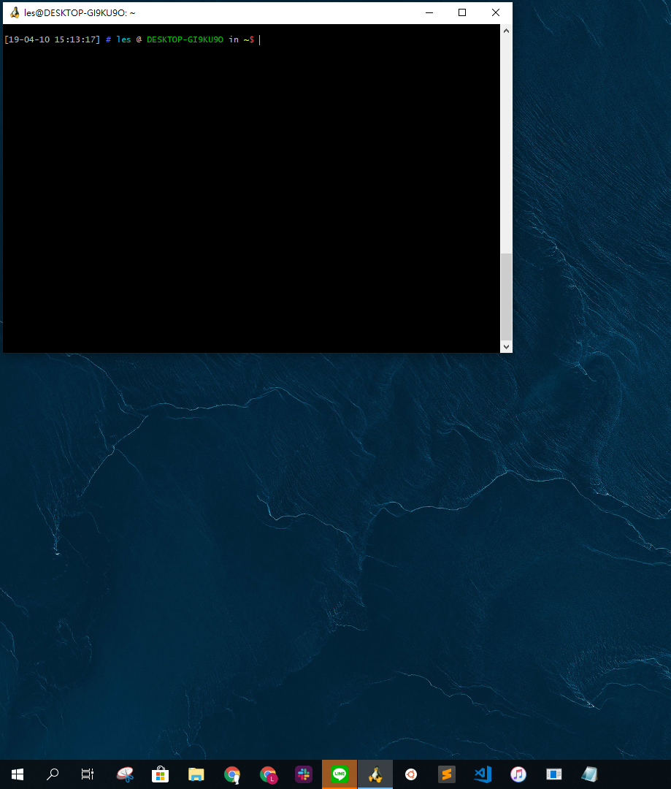
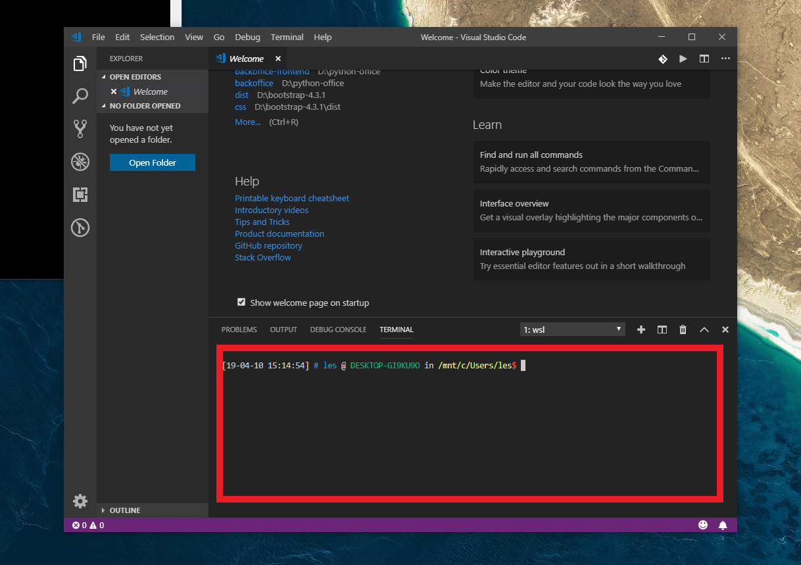
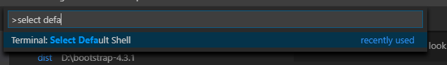
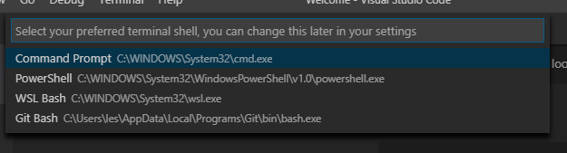

# WSL 與 Windows 的完美雙結合 — 修改 VSCode 的預設 Terminal 為 WSL
上次說到 Windows 10 之後支援了 Windows Subsystem for Linux (WSL) 的功能。使得我們可以在 Windows 中操作 Linux，並且雙系統之間可以互相調用資源。
因此我們可以在 Windows 中使用 Linux 的套件對專案 Debug、操作各種 Linux 較好達成的事情；也可以在 Linux 中使用 Windows 中安裝好的程式反過來操作 Linux 中的文件。
詳細可以查看我之前的文章，就不再贅述了。
( WSL 與 Windows 的完美雙結合 — Windows 10 下使用 VSCode 調用 WSL 對 PHP 專案 Debug )

今天要講的便是其中一個應用。
由於我一直是個 Mac OSX 的使用者。大家都知道 Mac 的 OSX 是一個 Unix Like 的系統。因此當中的 VScode 中的 Terminal 當然也是 Linux shell，不論是 bash 或是 zsh。
對於一個在 Mac 上使用 VScode 的使用者來說，轉換到 Windows 的 Power Shell 著實非常不習慣。
因此今天要記錄的便是修改 VScode 的 Terminal 使其預設 Terminal 改成使用 WSL。

# VS Code 設定 WSL
使用快速鍵 Ctrl + Shift + P 並且輸入 Select Default Shell

之後應該可以在選單中看到你現在所能使用的 shell 清單

其中 Command Prompt 是我們熟知的 命令提示字元、PowerShell 就是 Windows 之後新出的 Shell 工具、接下來就是 WSL Bash 了。
我們就選擇好 WSL Bash 之後重開 VSCode，應該就可以在 Terminal 中看到熟悉的 WSL 介面了！